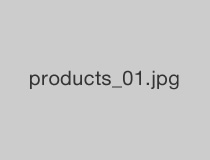

專門提供季節性花草。同時提供婚禮花籃・花飾的服務。
Natural Flower House店面花品介紹。

將招喚幸福的黃色含羞草花，送給您最重視的人如何？含羞草花季盛大展開中。
淡藍系的季節花飾，充滿令人放鬆的效果。
紅色系的季節性花飾，可讓玄關變得更明亮，也為家中帶來另一股活力。
隨風搖曳的白色小花，如花蜜般的芳香是其特徵，總讓人感到心曠神怡。
將鬱金香與風信子這些春季花種作成花飾，帶來如田園一般的清新氣息。
現在Natural Flower House也提供婚禮花籃與花飾製作的預訂，歡迎隨時來電詢問。